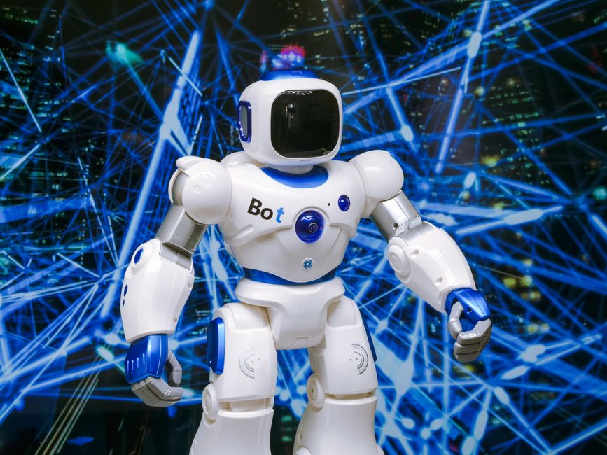

Imagine a world where robots walk, talk, and even work alongside us, not just in factories, but in our homes, hospitals, and even schools. This isn't just the stuff of science fiction anymore! Thanks to incredible advancements in robotics and Artificial Intelligence (AI), the dream of `humanoid robots` – machines designed to look and move like humans – is rapidly becoming a reality. From the astonishing agility of `Boston Dynamics`' creations to the ambitious vision of `Tesla Optimus`, we are on the cusp of a new era where human-like machines are set to redefine our future. Let's dive into the fascinating world of these bipedal wonders and the intelligent minds that power them.
What Are Humanoid Robots?
At its core, a humanoid robot is a robot whose overall body shape resembles that of the human body. This usually means they have a torso, a head, two arms, and two legs. The most distinguishing feature, and often the most challenging to engineer, is their ability to walk on two legs – making them true `bipedal robots`.
Why Build Robots That Look Like Us?
You might wonder, why bother making robots that look human? Why not just wheels or tracks? The answer lies in our world. Our environments – homes, offices, cities – are built for humans. Stairs, doorknobs, tools, and even cars are designed for our two arms and two legs. A robot that shares our form can theoretically navigate and interact with these environments much more naturally and effectively than a wheeled or tracked machine. They are designed to operate in a human-centric world, making them incredibly versatile for a wide range of tasks.
The Brain Behind the Brawn: Artificial Intelligence
A robot, no matter how perfectly engineered, is just a collection of metal and wires without a "brain." This is where Artificial Intelligence (AI) comes in. AI is what allows these robots to perceive their surroundings, make decisions, learn from experiences, and interact intelligently with humans and their environment. Think of AI as the operating system and the learning capability that brings a humanoid robot to life.
How AI Powers Humanoid Actions:
- Perception: AI uses cameras (computer vision), sensors (touch, proximity, lidar), and microphones to understand the world around it, much like our eyes and ears.
- Navigation and Balance: Sophisticated AI algorithms help `bipedal robots` maintain balance while walking, running, or even dancing. They can plan routes, avoid obstacles, and adapt to uneven terrain.
- Interaction: AI enables robots to understand human speech, respond appropriately, recognize faces, and interpret gestures, making `human-robot interaction` smoother and more intuitive.
- Learning: Through machine learning, robots can improve their performance over time. They can learn new tasks by observing humans or by practicing through trial and error in simulated environments.
Pioneers in the Humanoid World
Several companies and research institutions are pushing the boundaries of what humanoid robots can do. Let's look at some of the most prominent players.
Boston Dynamics: The Agility Masters
`Boston Dynamics` is perhaps the most famous name when it comes to dynamic and incredibly agile robots. Their videos often go viral, showcasing robots performing feats that seem impossible.
- Atlas: Their flagship humanoid robot, Atlas, is renowned for its incredible balance, agility, and dexterity. It can walk, run, jump, perform parkour, and even carry objects, adapting to complex environments with impressive grace. Atlas demonstrates the pinnacle of bipedal locomotion and whole-body control.
- Spot: While not a humanoid, their quadruped robot Spot is a testament to their engineering prowess in dynamic movement and perception, often working in tandem with researchers developing humanoid capabilities.
"Our mission is to imagine and create exceptional robots that enrich people's lives. We believe that robotics is the next frontier of innovation." - Boston Dynamics
Tesla Optimus: The Ambitious Generalist
`Tesla Optimus` represents a different, yet equally ambitious, approach. Unveiled by Elon Musk, Optimus is designed to be a general-purpose humanoid robot capable of performing repetitive, boring, or dangerous tasks currently done by humans. The vision is for Optimus to be mass-produced and affordable, making humanoid robots accessible for a wide range of applications, from manufacturing to domestic help.
Optimus aims to leverage Tesla's expertise in AI, particularly in computer vision and real-world autonomy developed for self-driving cars. The goal is to create a robot that can learn and adapt to various tasks without needing explicit programming for each new job, making it a truly versatile helper.
Other Notable Humanoids:
- Honda ASIMO: A historic pioneer, ASIMO (Advanced Step in Innovative Mobility) from Honda showcased advanced bipedal walking and basic `human-robot interaction` for decades before its retirement, paving the way for many modern humanoids.
- Agility Robotics Digit: This robot is designed for logistics and last-mile delivery, capable of navigating warehouse environments and carrying packages, focusing on practical applications for bipedal movement.
Challenges and Triumphs in Humanoid Development
Building a humanoid robot is incredibly complex. Here are some of the major hurdles and breakthroughs:
Key Challenges:
- Balance and Stability: Maintaining balance on two legs, especially over uneven terrain or when carrying objects, requires sophisticated control systems and powerful actuators.
- Dexterity: Human hands are incredibly complex. Replicating that level of fine manipulation and grip strength is a huge challenge.
- Energy Consumption: Powering all those motors and sensors, especially for sustained periods, requires efficient batteries and power management.
- Robust AI: Real-world environments are unpredictable. AI needs to be robust enough to handle unexpected situations, learn from errors, and operate safely alongside humans.
- Cost: High-end humanoid robots are currently very expensive, limiting their widespread adoption.
Recent Triumphs:
Despite the challenges, progress has been phenomenal:
- Dynamic Locomotion: Robots like Atlas can now run, jump, and climb with remarkable agility.
- Advanced Manipulation: Newer robots are demonstrating improved dexterity, capable of grasping delicate objects and performing complex tasks.
- Improved Human-Robot Interaction: AI advancements are leading to more natural conversations and collaborative work between humans and robots.
The Future is Here: Applications and Impact
The potential applications for humanoid robots, especially with advanced AI, are vast and exciting:
- Manufacturing and Logistics: Performing repetitive tasks, lifting heavy objects, and navigating complex factory floors.
- Healthcare: Assisting nurses, delivering supplies, and even providing companionship or therapy.
- Exploration: Operating in dangerous or inaccessible environments, such as disaster zones or space.
- Education and Research: Serving as teaching assistants, research platforms, and inspiring the next generation of engineers and scientists.
- Domestic Assistance: Helping with household chores, elderly care, and companionship.
For young innovators in India, this field presents an incredible opportunity. Learning about robotics and AI now can prepare you to be at the forefront of this revolution. Imagine designing the next generation of robots that help solve real-world problems!
A Glimpse into Robot Decision Making (Pseudocode Example):
To understand how AI helps a humanoid robot "think," let's look at a very simplified example of how it might decide what to do based on its environment:
# This is a simplified example, not real code you'd run directly on a robot!
# It shows the logic of perception and decision-making.
def perceive_environment(sensor_data):
"""
Simulates the robot processing data from its cameras, lidar, and other sensors.
Returns a simple interpretation of what's around it.
"""
if "large_obstacle_ahead" in sensor_data:
return "obstacle"
elif "human_detected_nearby" in sensor_data and "waving" in sensor_data:
return "human_waving"
elif "charging_station_visible" in sensor_data and "battery_low" in sensor_data:
return "needs_charge"
else:
return "clear_path"
def robot_action_decision(perception_result):
"""
Based on the perception, the robot decides its next action.
"""
if perception_result == "obstacle":
print("Action: Initiating obstacle avoidance sequence. Searching for alternative path.")
# Call advanced motion planning algorithms here
elif perception_result == "human_waving":
print("Action: Waving back and approaching cautiously for interaction.")
# Activate human-robot interaction protocols (speech, gestures)
elif perception_result == "needs_charge":
print("Action: Navigating to charging station.")
# Execute navigation to known charging location
else: # "clear_path"
print("Action: Continuing current task (e.g., patrolling, delivering).")
# Resume primary mission
# --- Simulation of a robot's moment-to-moment thought process ---
# Scenario 1: Robot detects an obstacle
current_sensor_data_1 = ["floor_is_even", "light_is_good", "large_obstacle_ahead"]
what_robot_sees_1 = perceive_environment(current_sensor_data_1)
print(f"Robot perceives: {what_robot_sees_1}")
robot_action_decision(what_robot_sees_1)
print("---")
# Scenario 2: Robot sees a human waving
current_sensor_data_2 = ["floor_is_even", "human_detected_nearby", "waving"]
what_robot_sees_2 = perceive_environment(current_sensor_data_2)
print(f"Robot perceives: {what_robot_sees_2}")
robot_action_decision(what_robot_sees_2)
print("---")
This simple example shows how AI takes input from sensors, interprets it, and then triggers a specific behavior. Real humanoid robots use far more complex algorithms, but the basic principle of perception-decision-action remains the same!
Conclusion: Building the Future, One Robot at a Time
The journey of `humanoid robots` and AI is one of the most exciting frontiers in modern technology. From the dynamic movements of `Boston Dynamics`' Atlas to the ambitious vision of `Tesla Optimus` for widespread utility, these machines are not just mechanical marvels; they are intelligent companions and helpers in the making. The challenges are immense, but the progress is even more inspiring.
For students and enthusiasts in India, the opportunity to contribute to this field is immense. Understanding the principles of robotics, AI, and programming will be key to shaping a future where humans and humanoids can coexist and collaborate effectively. The future of `human-robot interaction` is being written right now, and you can be a part of it!
Ready to Join the Robotics Revolution?
At MakerWorks, we believe in empowering the next generation of innovators. Explore our courses, workshops, and resources to kickstart your journey into robotics and AI. The world of humanoid robots awaits your ingenuity!